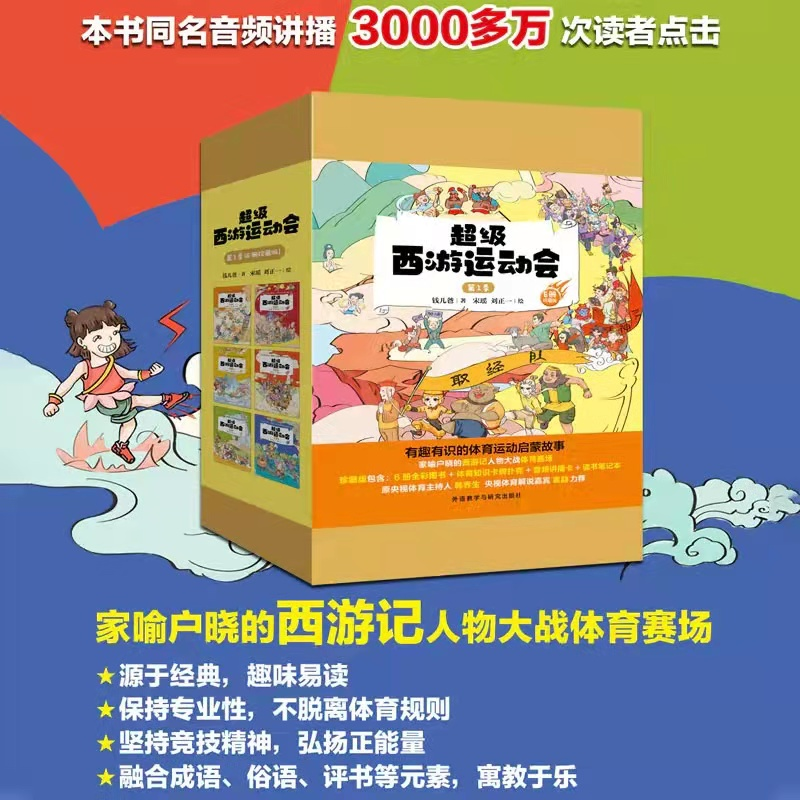
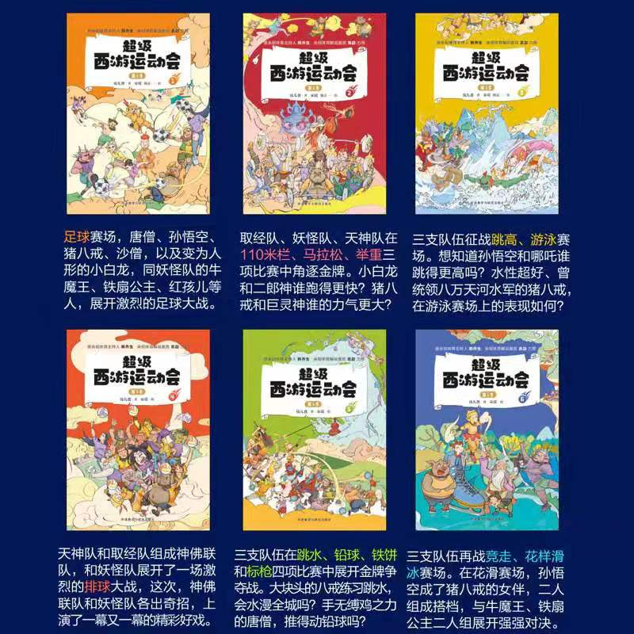
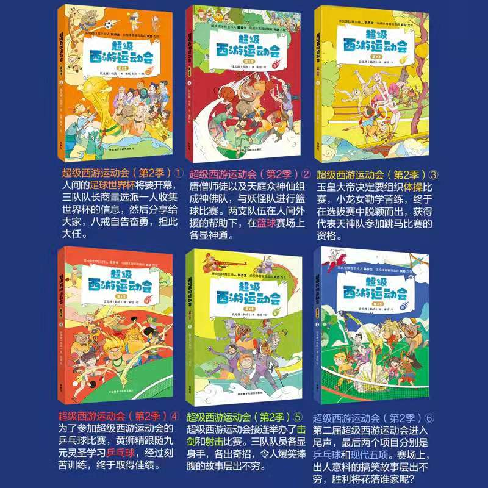

超级西游运动会第二季

少年特战队 系列
十万个为什么第六版
Little Miss系列
三毛系列
老鼠侦探团系列
福尔摩斯系列
奇想国系列
我为什么会生病（大医生向孩子解释身体的奥秘）
National Geographic kids系列
小牛顿的智慧科普绘本系列
我的第一本地理启蒙书
神奇的小草
特种兵学校系列
敲打石头的人
科学的故事系列
乘着一束光
基思•哈林画个不停的男孩
澡盆里的万物简史
灯光！镜头！爱丽丝！
亲爱的小孩
那一年树叶没有落下来
精灵小弟
哇哟，有雷雨！
达尔文环游世界
大师三人行系列
汉语数学
父与子系列
格林童话
安徒生童话稻草人
大象巴巴
小王子
.......